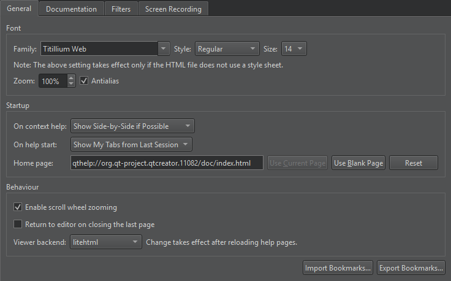

Get help
Qt Design Studio comes fully integrated with Qt documentation and examples using the Qt Help plugin.
- To view documentation, switch to the Help mode.
- To view context sensitive help on a Qt class or function as a tooltip, move the mouse cursor over the class or function. If help is not available, the tooltip displays type information for the symbol.
- To display tooltips for function signatures regardless of the cursor position in the function call, press Ctrl+Shift+D.
- To display the full help on a Qt class or function, press F1 or select Context Help in the context menu. The documentation is displayed in a view next to the code editor, or, if there is not enough vertical space, in the fullscreen Help mode.
- To select and configure how the documentation is displayed in the Help mode, select Preferences > Help.
The following image displays the context sensitive help in the Edit mode.

Change the font
If the help HTML file does not use a style sheet, you can change the font family, style, and size in Preferences > Help > General.

You can set the default zoom level in the Zoom field. When viewing help pages, you can use the mouse scroll wheel to zoom them. To disable this feature, deselect the Enable scroll wheel zooming check box.
To disable antialiasing, deselect the Antialiasing check box.
Return to the editor
To switch to the editor context when you close the last help page, select the Return to editor on closing the last page check box.
Select help viewer backend
The help viewer backend determines the style sheet that is used to display the help files. The default help viewer backend that is based on litehtml is recommended for viewing Qt documentation. You can choose another help viewer backend in the Viewer backend field. To take the new backend to use, reload the help page.
View function tooltips
To hide function tooltips by default, select Preferences > Text Editor > Behavior > Show help tooltips using the mouse > On Shift+Mouseover. You can still view the tooltips by pressing and holding down the Shift key.
To use a keyboard shortcut for viewing help tooltips, select Show help tooltips using keyboard shortcut (Alt).
See also Find information in Qt documentation, Filter documentation, Search from documentation, Add external documentation, Detach the help window, Filter documentation, Find information in Qt documentation, and Select the help start page.